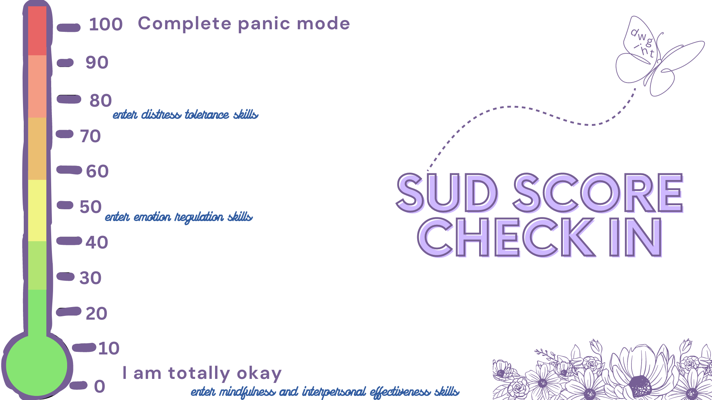
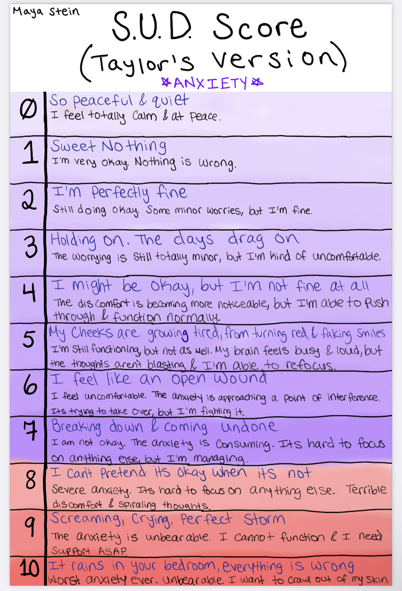
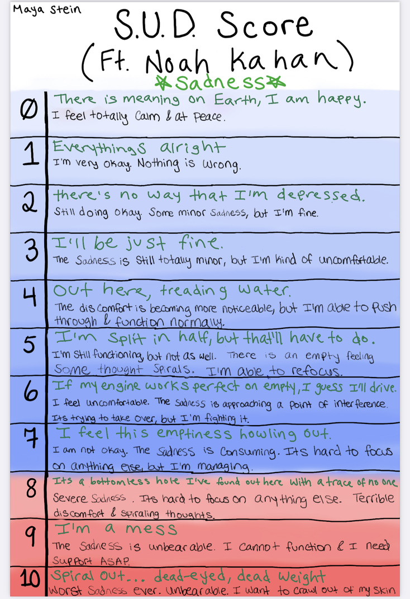

dwight

Mindfulness Skills
Emotion Check In
It is important to take your emotional temperature to know when to use specific skills.
Typically, distress tolerance skills become neccessary when your emotional intensity is at or above 80%
SUD (subjective units of distress) scores are a type of emotional measurement scale
This is a general SUD scale you can use for reference:

Want a more detailed measurement scale? Try these song-themed scales:


Pretzel Relaxation
Pretzel Steps:
- Set a timer for 1-5 minutes. It can be helpful to use music as your timer (set it to turn off when the time is up)
- Cross your right arm over your left arm (palms facing, thumbs down)
- Clasp your fingers together, and turn your hands so they are crossed against your chest
- Sit with your legs in a criss cross
- Breathe until the time is up
- Repeat, but with the left arm over the right one
54321
Pause and identify.....
- 5 things you can see
- 4 things you can touch
- 3 things you can hear
- 2 things you can smell
- 1 thing you can taste